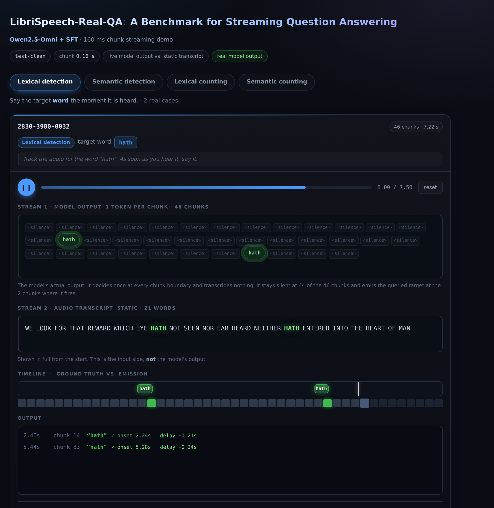

Lexical detection
Emit a target word as soon as it is heard.
ICASSP 2027 submission
A Benchmark for Streaming Question Answering
Speech language models usually wait for a complete utterance before responding. LibriSpeech-Real-QA tests whether a model can listen, reason, and answer at the exact moment relevant evidence arrives.
Why real time matters
Most speech large language models process audio offline and only respond after the speaker finishes. Real applications often require continuous interaction: a model should update its answer from the audio received so far, without looking into the future.
We construct real-time question-answer pairs from LibriSpeech and evaluate whether speech language models identify target words in a stream. The benchmark measures both correctness and response timing, including the model's ability to remain silent between events.
Benchmark design
Emit a target word as soon as it is heard.
Emit words that belong to a queried semantic category.
Maintain a running count of a specified word.
Count mentions from a queried semantic category.
Model behavior
Play eight real predictions from the test-clean split. The display shows one model decision per chunk, event timing, response delay, and the silence decisions that dominate a correctly behaved stream.

Launch interactive demoTakeaway
Popular real-time commercial models still tend to respond after the speech turn has finished rather than at the relevant moment.
A pretrained speech language model can be adapted to make sparse, chunk-level decisions and establish a baseline for future research.
Reference
@article{zhan2026librispeechrealqa,
title={LibriSpeech-Real-QA: A Benchmark for Streaming Question Answering},
author={Zhan, Zewen and Lu, Hui and Chen, Xueyuan and Wang, Huimeng and Huang, Yikai and Wu, Xixin and Kang, Shiyin and Xia, Bin and Wu, Zhiyong},
journal={arXiv preprint arXiv:2611.06496},
year={2026}
}